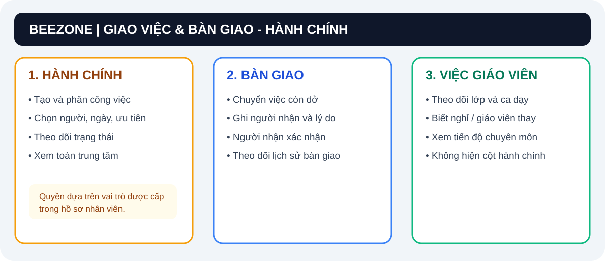
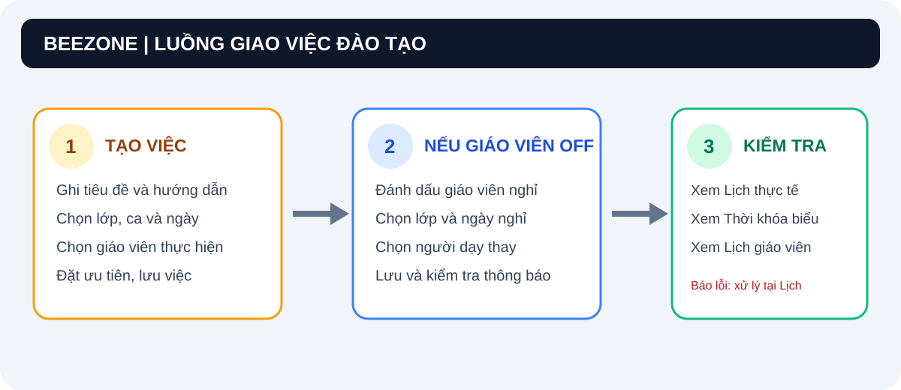
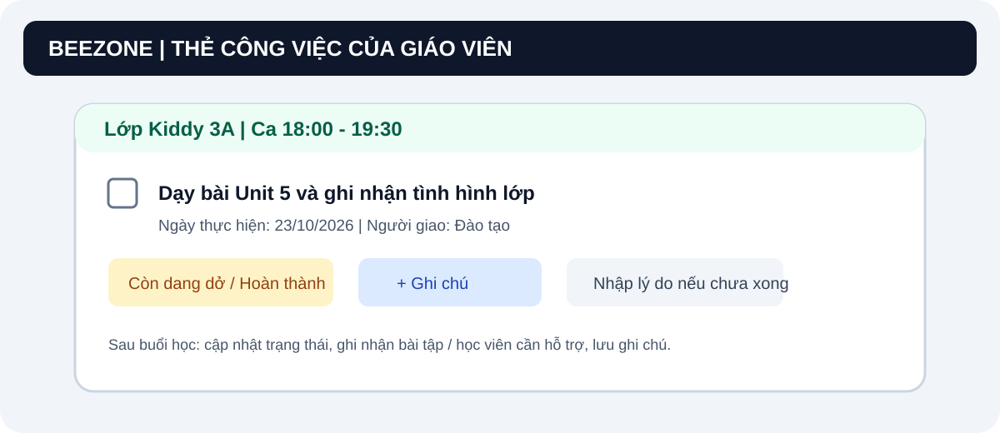

Hệ Thống Quản Lý Trung Tâm & Vận Hành Giảng Dạy
Đăng nhập: Tài khoản Chủ trung tâm hoặc nhân viên được cấp nhánh Hành chính.
Phạm vi: Thấy 3 cột Hành chính, Bàn giao và Việc giáo viên. Có thể tạo, sửa, phân công, theo dõi tiến độ và nhận bàn giao.
Đăng nhập: Tài khoản nhân viên được cấp quyền Đào tạo.
Phạm vi: Tạo và phân công việc cho Giáo viên theo lớp, theo dõi tiến độ chuyên môn, phối hợp xếp giáo viên dạy thay. Cột Hành chính được ẩn.
Tài khoản: Các giáo viên lớp học.
Phạm vi: Xem việc Đào tạo / Giáo viên, cập nhật trạng thái, nhập lý do và ghi chú ca dạy. Cột Hành chính được ẩn; các việc được bàn giao có thể xuất hiện trong cột Bàn giao.

Bộ phận Hành chính và Chủ trung tâm là nhánh quản lý tổng thể, có quyền hạn đầy đủ nhất:
Khi đăng nhập bằng tài khoản Hành chính hoặc Chủ cơ sở, màn hình hiển thị đầy đủ cả 3 cột:
• Cột 1 (🔸 Việc hôm nay · Hành chính): Các công việc vận hành, lễ tân đón bé, quản lý cơ sở vật chất, thu học phí tồn đọng.
• Cột 2 (🟦 Bàn giao cuối ca / cuối buổi): Danh sách các công việc còn dang dở cần người trực ca sau tiếp nhận theo dõi.
• Cột 3 (👩🏫 Việc giáo viên theo lớp): Toàn bộ tiến độ các buổi dạy của giáo viên từng lớp học trong ngày.
Thanh bộ lọc đã được chuẩn hóa trên 1 hàng ngang duy nhất:
• Ô Tìm kiếm (dãn rộng): Gõ từ khóa tìm nhanh theo tên việc, lớp học, giáo viên hoặc nội dung. Có nút ✕ để xóa nhanh từ khóa.
• Ô Chọn ngày: Chuyển nhanh giữa ngày hôm nay và các ngày khác.
• Dropdown Trạng thái: Lọc theo: Tất cả trạng thái, Chưa làm, Đang làm, Còn dang dở, Hoàn thành, Cần bàn giao.
• Sao lưu & Khôi phục: Nằm gọn gàng trong nút 🎨 Tùy chỉnh ở góc trên bên phải, giúp thanh công cụ lọc luôn thông thoáng, sạch đẹp.
• Bàn giao việc dở: Trên thẻ việc cần bàn giao, bấm nút ↪ Bàn giao. Việc sẽ tự động chuyển sang Cột 2 (Bàn giao ca).
• Nhận ca: Người trực ca sau bấm nút ✓ Nhận ca, gõ tên và ghi chú xác nhận tiếp nhận.
• Sao chép bàn giao Zalo: Bấm 📋 Sao chép nội dung bàn giao để dán báo cáo trực tiếp vào nhóm Zalo trung tâm.
Nhân viên có hồ sơ Đào tạo phụ trách giao việc cho Giáo viên từng lớp học:
Bấm nút ＋ Tạo công việc. Form tạo việc được thiết kế tối ưu, thông thoáng và chuẩn xác:
• Tên công việc & Nội dung: Nhập tên nhiệm vụ và mô tả yêu cầu chi tiết.
• Nhánh công việc & Người thực hiện: Xếp song song 2 cột cân đối. Nhãn Người thực hiện * thông thoáng, sạch đẹp.
• Lớp học & Ca / Buổi: Nhãn Ca / Buổi (đồng bộ với thời khóa biểu & lịch dạy) trải dài thẳng hàng trên 1 dòng duy nhất, không bị chèn ép nút phụ làm gãy dòng.
• 3 TRƯỜNG TRÊN 1 HÀNG NGANG 3 CỘT: Ngày thực hiện * — Mức ưu tiên — Trạng thái được bố trí thẳng hàng cân đối, thuận tiện thao tác nhanh.

Khi có giáo viên xin nghỉ đột xuất hoặc nghỉ phép:
1. Tick chọn ô 👩🏫 Cô đăng ký nghỉ (off) & phân công giáo viên dạy thay / dạy bù.
2. Chọn lớp, ngày nghỉ và giáo viên dạy thay khác giáo viên chính của buổi học. Kiểm tra ca/giờ được lấy từ thời khóa biểu.
3. Bấm Lưu công việc. Nếu hệ thống báo đồng bộ thành công, lịch nghỉ và giáo viên thay thế sẽ được ghi vào Lịch thực tế, Thời khóa biểu và Lịch giáo viên. Nếu báo lỗi, sửa lịch tại phân hệ Lịch thực tế và không coi công việc đã lưu là lịch nghỉ hợp lệ.
• Thêm mới nhân sự / giáo viên: Trong dropdown Người thực hiện, chọn dòng cuối ➕ Thêm mới nhân sự / giáo viên... để mở form bổ sung nhanh.
• Tự nhập giờ làm việc: Trong dropdown Ca / Buổi, chọn dòng ➕ Thêm mới / Tự nhập mốc thời gian... để gõ giờ bắt đầu - kết thúc theo yêu cầu.
Giáo viên đăng nhập bằng tài khoản của mình. Giao diện được tối giản, tập trung hoàn toàn vào chuyên môn giảng dạy:
• Để đảm bảo bảo mật và không gây xao nhãng, Giáo viên và Đào tạo không nhìn thấy cột Việc hành chính. Các việc được bàn giao cho họ vẫn có thể xuất hiện trong cột Bàn giao.
• Màn hình của giáo viên hiển thị trực tiếp danh sách ca dạy của các lớp mình phụ trách tại cột 👩🏫 Việc giáo viên theo lớp và các công việc bàn giao ca.

Sau khi kết thúc buổi dạy, giáo viên chỉ cần 1 chạm:
• Tick vào ô vuông ☑ ngay trước tên công việc trên thẻ việc, hoặc bấm nút ✓ Hoàn thành.
• Thẻ việc chuyển sang màu xanh lá hoàn thành và tự động lưu mốc thời gian hoàn thành (ví dụ: ✓ Xong 19:35).
Nếu buổi học chưa kịp làm bài kiểm tra hoặc còn nội dung dở:
• Bấm nút ◷ Còn dang dở (hoặc nút ↶ Chưa làm).
• Nhập lý do (ví dụ: "Học viên cần ôn thêm từ vựng, sẽ kiểm tra 15 phút vào buổi sau"). Trạng thái nhiệm vụ chuyển sang màu vàng để Đào tạo theo dõi.
• Bấm nút ☷ Ghi chú trên thẻ công việc.
• Nhập tóm tắt buổi dạy: Tình hình học sinh, bài tập về nhà, bé nào cần phụ đạo thêm.
• Bấm Lưu: Dòng ghi chú mới nhất được ghim trực tiếp trên mặt thẻ công việc kèm tên giáo viên và thời gian ghi chú để Ban Giám đốc và Hành chính cùng nắm bắt.
| Bộ phận | Đầu ca / Trước giờ dạy | Trong ca làm việc | Cuối ca / Kết thúc buổi |
|---|---|---|---|
| 🏢 Hành chính | Nhận ca trực, kiểm tra việc bàn giao từ ca trước. | Đón học sinh, điểm danh, thu học phí, trực điện thoại. | Chuyển việc dở vào bàn giao ca, sao chép báo cáo Zalo. |
| 📋 Đào tạo | Tạo việc cho GV từng lớp, xếp GV dạy thay nếu có cô nghỉ. | Theo dõi tình hình điểm danh và sĩ số các lớp. | Kiểm tra tiến độ hoàn thành và ghi chú nhận xét của GV. |
| 👩🏫 Giáo viên | Mở xem việc lớp mình phụ trách, chuẩn bị giáo án. | Giảng dạy, tương tác học viên, cho làm bài tập. | Tick hoàn thành ☑, báo dang dở nếu có và nhập Note xác nhận. |